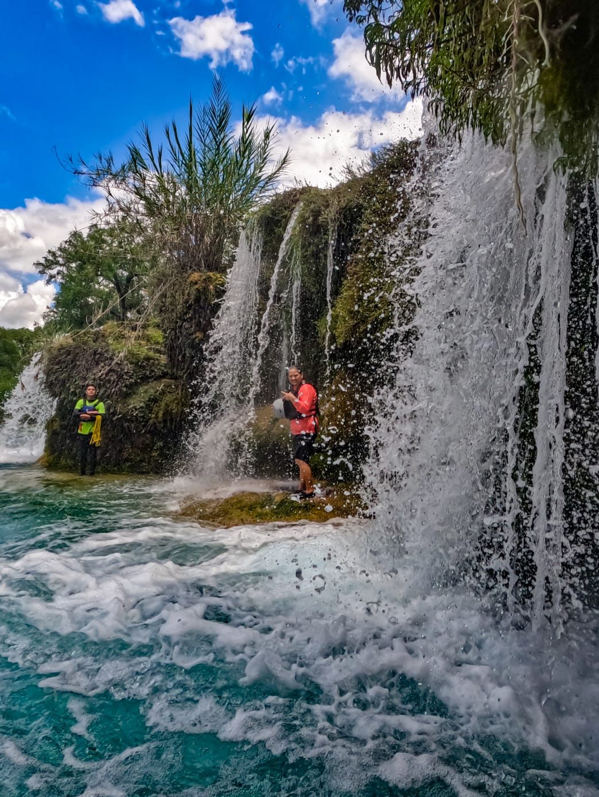
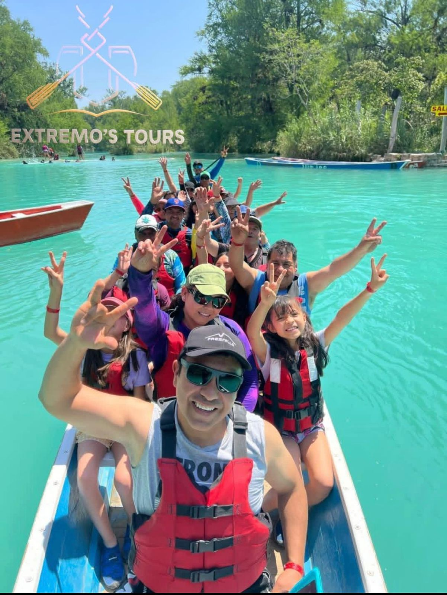
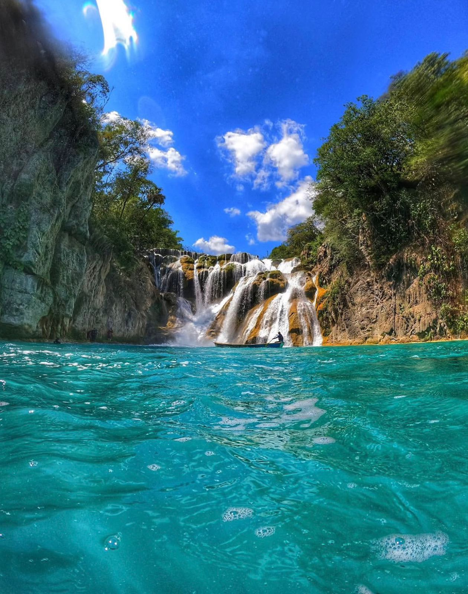
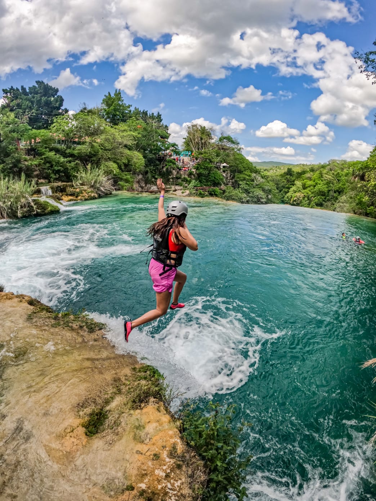

El Sundial, ubicado en la Colonia Agrícola El Meco, El Naranjo, es un destino que combina la majestuosidad de una cascada imponente, la tranquilidad de la naturaleza y la emoción de la aventura. Un lugar perfecto para desconectarte del mundo y reconectar contigo mismo.
Vegetación exuberante y paisajes únicos que te dejarán sin aliento.
Actividades acuáticas y experiencias llenas de adrenalina.
Cabañas y espacios para relajarse y disfrutar en armonía.
Gran variedad de platillos exquisitos en nuestro restaurante buffet.




Donde el agua, la naturaleza y la aventura se encuentran.
Cómo Llegar